This is my week two blog talking about engineering class. This week we are working with tinkercad and making designs of things. For example, we worked on a little machine thing that is supposed to use different objects to pop a balloon. Another thing we did was use an image of something and we made that thing in tinkercad. I don't think I have learned much in this class but I know I will have fun. When the judges were looking at our tinkercad, I thought I would win, but I did not. The person that won made a Nintendo Switch that was pretty cool, but I don't think it was as cool as my baby minion and I'm pretty sure it did not take as long as mine. I'm not gonna try so hard next time and I am not going to expect to win. 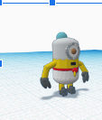
This is my week three blog of talking about engineering class. This week we worked on our Rube Goldberg Machines. We also did our challenge three project. We made an E and made measurements. We then gave that E to another classmate and they had to make a final draft type thing with the E. The person that gave me his E, made his super big. His was 36 inches by 14 inches and it was hard to cut out. He also did not give me very specific instructions, so I had to kind of guess on some of the measurements and it was pretty hard. In the end I did finish it and it was cool. When we picked whos machine we were going to use, everybody picked mine. So now we are using my machine and it is really awesome. 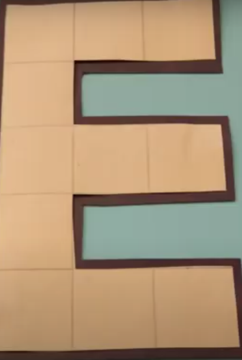
This is my week four blog about engineering class. This week we did more work on our rube golberg machines. I think that our design is pretty good and should work. We also did another challenge and we had to make a boat and make it float with weights on it. My group did really bad, but it was fun to see other groups do good. We are done with our rube goldberg machines, but I would like to work a bit more on them. All we really should fix is maybe the pillars holding up the poles that make our pulley system work. We also should get a taller car so that we have a better chance at popping the ballon. To be honest with you, I feel like me and Theo are the only people doing the work. Sure Dylan is bringing stuff but other tha that he is not doing anything. Oh, I almost forgot about Leo. He has done nothing at all. Maybe he's cut some carboard or something, but he has spent most of the time, watching us, talking to people or wandering around. I dont mean to throw them under the bus, but that is how I feel deep down. Other than that, I love having them in my group and they are such good friends. 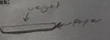
This my week five blog about my amazing engineering class. On wednesday we were supposed to do the map testing but the internet was down for the firt part of class so we did work on our rube golberg projects. For the second part of class, I thought we were going to to regular engineering class stuff, but we did map testing. On friday, we tested our projects and we had some pretty bad luck. For most of the class we were trying to find ways to keep the car going foward and in a straight line and then we tested it but that didnt work. So after testing some more we got a new needle and finnaly it worked and we were so happy. After that, we went to check out the other classes machine and theirs were super different anc complicated. We watched them test, but then decided to leave because Alec would not leave us alone and decided to brag about how he did all of the work and about how if he wasnt in the group they would fail the project. But anyways we got back to class and someone comes up to me asking if he can use my truck. I give it to him and he immediately pops his ballon after failing even more than our group. I was happy to help, but it was just kind of annoying having to get my car out right after I had just put it away. This was a pretty fun week and I cant wait for the next. 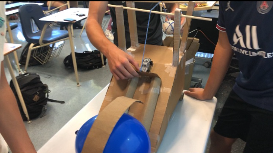
This is my week six blog about my enginnering class. This week we did not work on our Rube Golberg project so that means we did something else. We took apart old chromebooks that were already broken. I was with Theo and we worked together pretty well. He oppened up the slides and told me how to take it apart and we finished that up pretty fast. Then he gave me the chromebook so that I could tell him how to take it apart. After we finished, we watched Dylan and Leo do their chromebook. They were breaking pieces left and right and had no idea what they were doing since they didnt even look at the slides. I love watching them work together because it is so funny when they start doing things theyre not sopposed to do. The were so lost that they even taped the hardrive back in place. 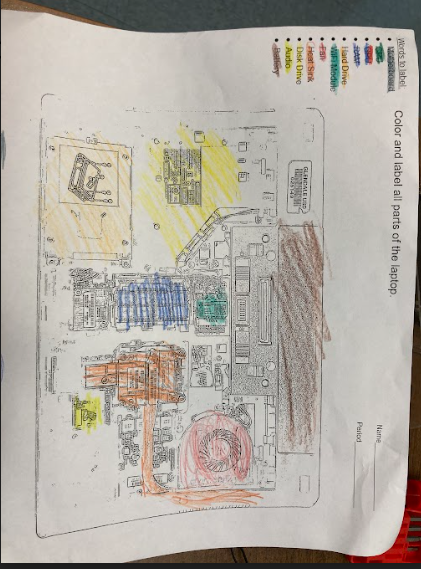
This is my week seven blog about my goofy engineering class. This week we did some weird things. We made some animal prosthetics and that was quite interesting. I made an arm for a tick so that they can grab onto their victim and suck them without any issues. Theo made a prosthetic for a monkey that uses their nose to make their mating call and stuff. Leo made a dog leg even though the teacher said that cat and dog prosthetics were not allwed. Dylan made a leg for this big stork thing. It was called the shoebill stork and it is very scary. All he did to make the prosthetic was look up leg on tinkercad and there was a premade shape. Later that week, we did a peanut butter and jelly challenge. We had to write instructions on how to make one and out classmates had to follow those instructions exacly and make the sandwitch. It was super funny to watch the people at the beginning, but then it just got kindof boring and annoying.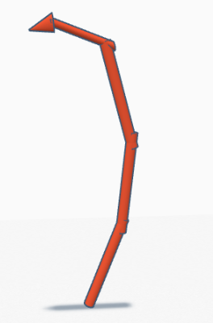
This is my week eight blog about my Elon Musk class. This week we did paper trowing. It was honestly pretty broing. All i did was crumble a piece of paper into a ball and throw it into a bucket. It was kind of fun to watch other people throw their airplanes that were actually cool but most people did not even get close to hitting or making it inside the trash can. The only person that did hit it had the same idea as me. He turned his paper into a ball and threw it as hard as he could at the can. I really dont remember what else we did. Well actually, I think we actually got into a zoom call with an engineer and we talked about aerospace engineering and stuff. 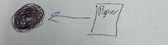
This is my week nine bloggy woggy. We made airpanes that would be launched out of a pressure thing. We made a tinkercad about a design and we picked whos design would be the best. We decided Theo's rocket would be the easiest and simplest to make so we did his. When it actually came to building it, I did not even use the design. I just made some wings and hot glued it to the plane. Then we added some decorations for style points and that was it. When it came time to actually launch our rocket plane thing, it was a disaster. We bought sparkling water to replace the still water with and then the pressure was added. There was a count down and the our rocket spun in circles and did not gain any ground. We have learned our lesson and will make sure we do not try hard again. 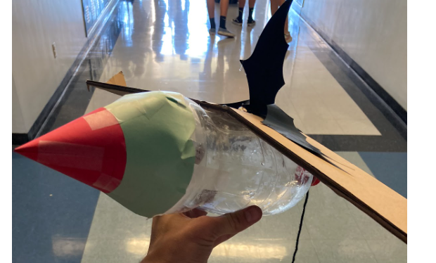
This is my week ten blog about my engineering class. We did some cool things this week. We made some filters to make clean water. We also put candy cornon a paper and tried to guess how many candy corn would fit on the entire paper. For the water cleaning, we got into groups and we had to put huge rocks, small rocks, sand and tissues. We then added dirty water, and wathced the water go through the system and drip into the other cup. After we poured the water back into the system to go through again. When we finished, we saw whos water was the cleanest and they won. Sadly my group was not even close to winning. 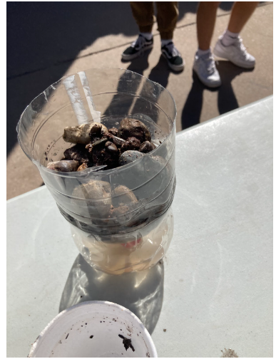
This is my week elleven blog about my engineering class. This week we learned about elctrical enineering and it was kindof boring. We learned about how to make circuits and things like that. We also learned about resistance, voltage and amps I think. We did some things on tinkercad that were fun, but I dont think it was as fun as some of the other things we have done. For the circuits on tinkercad, we used batteries, a bread board, resistors and lights. We connected them together to make the light turn on. You also had to change the resistance according to the battery you were using so that your light would not explode. After a few tries, I got it down and I know how to do it pretty well now. 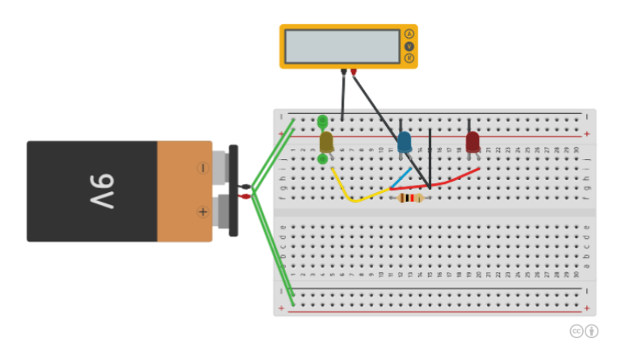
This is my week twelve blog about engineering class. This week we did some more electical engineering things. We made some more circuits and had to write them down on paper. I did not finish it in class so I had to finish them at home. They were really hard because me and Theo had no idea what we were doing. We leaned how to do things that we did not learn from the week before because we did it in real life and not on a computer. It was a fun experiece but I dont think I would want to do it again. 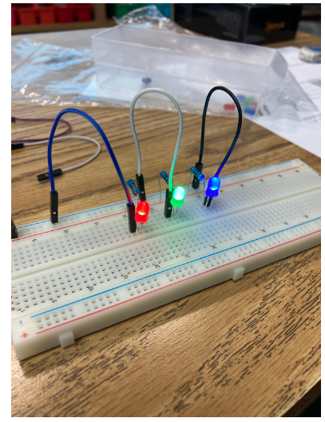
This is my week 13 blog about engineering class. This week was really fun but also really hard. We did some Arduino programming and we also made some circuits. Me and Theo were in a group together and we made some flashing lights. We had to first turn the light on, but then after that we started programming the lights to make them flash. We then added more and more lights and we made patterns with them. Me and Theo really did not know what we were doing so we did not make any interesting light patterns. On the bright side, one group did do that. they got many lights and made a christmas light inspired pattern. 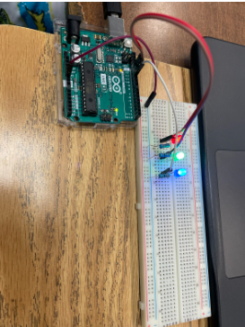
S2
This is my week one blog about engineering class. This week we learned about shark tank and business engineering. It was kind of fun but pretty boring. My group presented my idea of sleeping bag bed sheets. We made a cool slideshow but the presentation was not so great. Me and Theo did most of the talking and it was pretty scary. He got a buch of hate for our product, but it doesnt really matter because it was all Aaron. Other than that the week was boring. We did some learing and we did this challenge about who we would save. This was a really bad question because who is going to know who you love and tie them to a trian track for you to save. It makes no sense.
This is my week two blog about engineering class. We did some chemical engineering. The learning was super boring but it was interesting. We learned about how put black balls inside of a lake to get rid of some sort of chemical that can give people cancer. We also made some ooblek stuff. It was cool but messy. My chromebook is covered in corn starch. But all you do is add 1 cup of corn starch and 1/2 of a cup of water. You then mix all of the ingredients together to make a substance that is soft when you slowly touch it and hard when you hit it or touch it really quickly. We made some and the entire desk got so messy and our hands got red because of the food coloring that we added. 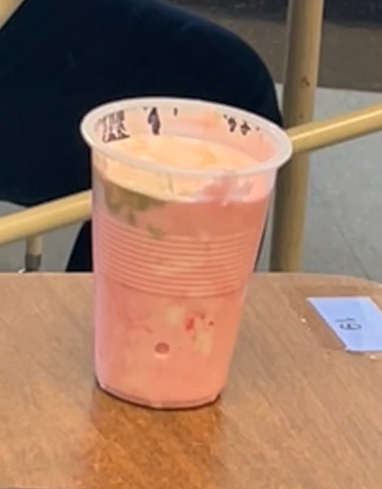
This is my week 3-8 website. My project did not perform the best last week. During the testing, it did great. I had no problems with anything. Nothing was breaking, and nothing was going wrong. But when I did the final test, I held the mouse trap down for too long, and the axle came off the car. When I let it go, it fell apart. Yes, I achieved what I set out for. My car matched the CAD design almost perfectly. All I did was change the size of the wheels and axles. What I learned from building and creating is that I always need to reinforce all parts of the car so that nothing breaks when it is under pressure. The most challenging part about making my project was making sure that the parts did not break. Doing this was very hard because you never know if you have done enough until you test it and make sure nothing is breaking. If I had more time, I would probably fix the axles and the frame. I would use a stronger frame so that nothing flexes. I would also make the axles stronger so that they do not come off when we hold down the mouse trap.
This is my week 10 website. So all we did was cut the cup in half and tape it. We wanted to add some sort of propeller, but that did not work. So we took that off and left it as the boat. Our boat went really far for not having any type of propeller. While it was in the water, the wind blew it very far. After we went about 4 feet we were disqualified. Next time we will probably add a sail so that the boat can go farther. We will also add some sort of cool looking thing to make it look better. Also we can maybe change the shape of the boat so that it can move through the water better.
This is my week 11 website. This week we started a new project. We are doing an egg drop challenge. On wednesday, we just made a design and we decided what material we are going to use. On friday, we made a tinkercad of what our egg protector will look like. Our design is a box with strings holding a balloon in the middle. It also has a parachute and straws at the bottom to absorb the impact when it lands. The balloon stays off the ground the whole time and acts as a cushion for the egg when the box hits the ground.
This is my week 12 website update. This week we started designing our super big boats. My group and I all made very similar boat designs. In the end we just decided to use a Theos design. We also decicded to add some paddles that will be made of cardboard and tape. Our boat is going to be 6.5 feet long, 4 feet wide and 3 feet tall. It is going to have some supports in the middle of the boat so that it does not fold in half when it goes into the water. That i why our boat is so tall. We need to have room to add the support but still keep the center of gravity lover so the boat does not tip.